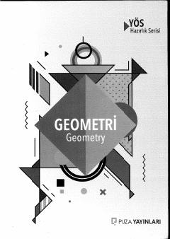

PGGeometriya fanini o'rganish va bilimni mustahkamlash uchun testlar to'plami.
Ushbu kitob geometriya fanini o'rganish va bilimlarni mustahkamlash uchun mo'ljallangan bo'lib, soddadan murakkabga qarab tuzilgan savollar va mavzulashtirilgan testlarni o'z ichiga oladi. Materiallar induktiv usulda taqdim etilgan bo'lib, o'quvchilarga mavzuni bosqichma-bosqich o'zlashtirish imkonini beradi. Kitobda burchaklar, uchburchaklar, to'rtburchaklar, aylana va analitik geometriya kabi asosiy bo'limlar yoritilgan.